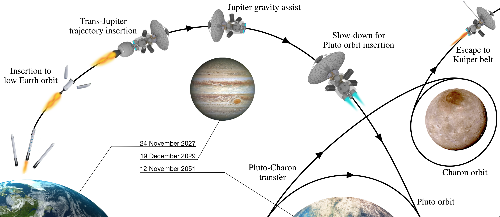

{kind=link}
Welcome to the astrotk documentation!¶
{kind=link}
The astrotk is an astrodynamics toolkit that is a project intended towards developing a Python interface with TU Delft Astrodynamic Toolbox (TUDAT).
Current features are:
- Conversion between Cartesian state vector, Classical orbital elements and Spherical coordinates.
Planned features are:
- Reference frame transformations according to the nomenclature and symbols in AE3202 Flight Dynamics.
- Customizable genetic algorithm module for initial interplanetary trajectory optimisation estimations using patched conics.
- ITRF, GCRF & ICRF transformations.
- The unknown content of the next AE4878 Mission Geometry & Orbit Design assignment 2!
See also
Choice of object oriented design and implementation of astrodynamics in Python is acknowledged to be adapted from Poliastro, which I used extensively during the Design Synthesis Exercise (DSE).
Installing¶
Clone the repository from GitHub:
git clone https://github.com/ggarrett13/astrotk.git
Navigate to the repository folder:
cd /astrotk
Install astrotk and its dependencies:
pip3 install .